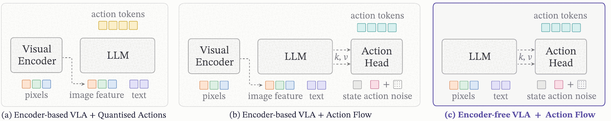
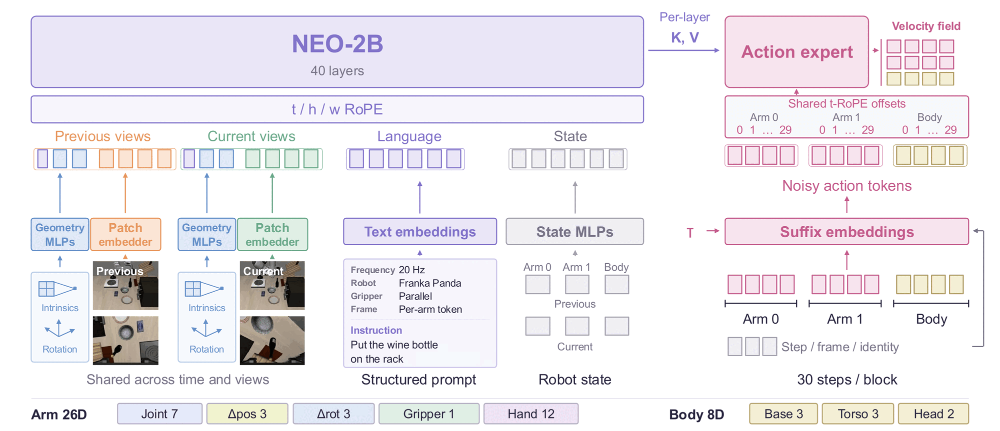
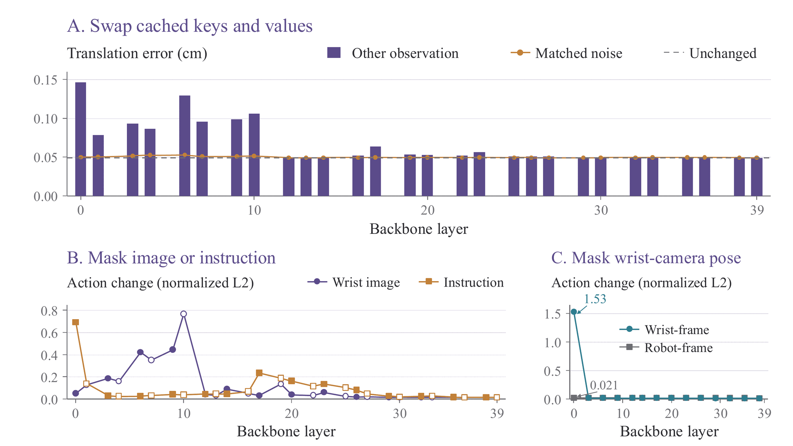
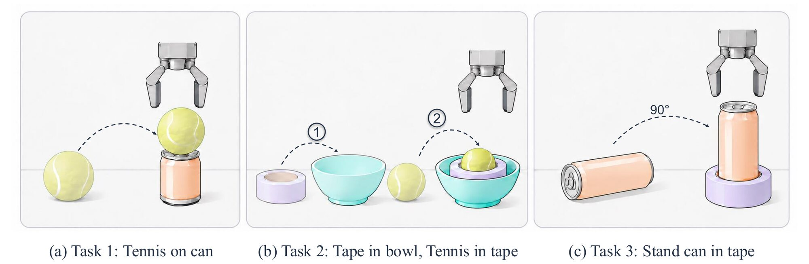
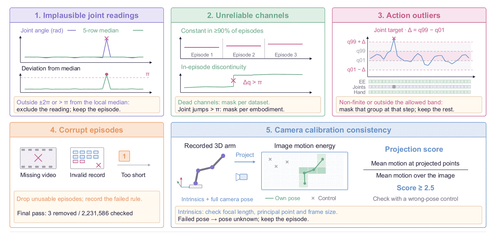

Most vision-language-action (VLA) models see the world through a separately pretrained vision encoder. The action policy only receives that encoder's final output, after local geometry, edges and depth cues have already been abstracted away. NEO-VLA drops the encoder. Pixels go through a lightweight convolutional patch embedder straight into a native vision-language backbone, and a flow-matching action expert reads from whichever backbone layers we choose.
Because the readout depth becomes a design choice, we can ask where in the backbone the information needed for control actually lives. Three findings come out of this study:
- Action-relevant information is organized across depth, not only in the final representation. With a frozen backbone, early layers dominate: reading them beats reading late layers at matched expert size. After full fine-tuning, a readout spread across all depths does best. Intervening on layers 0–10 changes the predicted action far more than intervening on later layers.
- Attaching Qwen's vision encoder to the action expert does not help. The gain comes from native vision-language pretraining. Routing the expert to Qwen3-VL's intermediate vision-tower features lowers frozen-backbone LIBERO success from 79.5% to 64.9%. The frozen native backbone reaches 90.9%.
- Understanding data matters in post-training. Co-training with NEO's understanding corpus keeps understanding within 1.5 points of the starting checkpoint and reaches 69.4% on RoboTwin 2.0 Clean2Rand. Action-only finetuning loses valid text output and falls to 10.7%.
VideoNEO-VLA in two and a half minutes
Robot clips are sped up 2–8×; the speed is marked in each shot.
ModelPixels in, continuous actions out
Encoder-based VLAs (a, b below) pass pixels through a visual encoder and hand its output to the language model. NEO-VLA (c) maps pixels directly into the backbone token space, so image patches and instruction words are processed together in every layer. A separate, narrow action expert attends to the cached keys and values of selected backbone layers and predicts a flow-matching velocity field over 30-step action chunks.


Finding 1Action-relevant information is organized across depth
Each layer of the action expert reads the cached keys and values of one backbone layer. We keep the expert fixed at 28 layers and change only which backbone layers it reads: skip-28 spreads its reads across all 40 layers, end-28 reads layers 12–39, and first-28 reads layers 0–27. All variants are pretrained on Open X-Embodiment for 75k iterations under identical settings.
The cleanest comparison is skip-28 vs. end-28: both keep all 40 backbone layers and the same 28-layer expert, and differ only in whether early layers are read. first-28 and first-14 also shorten the backbone, so they change depth and compute as well as readout position.
With a frozen backbone, early layers dominate: the maps that read only early layers score highest, and dropping access to the first 12 layers costs 4.2 points (90.9 → 86.7). After full fine-tuning, the distributed skip-28 readout is best (95.3, against 94.6 for first-28 and 92.5 for end-28), so fine-tuning narrows the early-layer gap but does not close it.
Where the expert is sensitive
To see which attachment points matter, we intervene on one at a time. Replacing the keys and values at one layer with those from a different observation and task raises translation error most at layers 0–10. Noise of the same magnitude stays within 0.004 cm of the unchanged error, so the effect comes from the content being replaced, not the size of the disturbance. Masking the wrist image hurts most around layers 6–10; masking the instruction hurts most at layer 0, with a smaller rise near layer 17. Language, appearance and geometry each have their strongest influence at a different depth.

skip-28 models). (A) Translation error after swapping one attachment's cached keys and values with another observation's (bars), adding matched-magnitude noise (orange), or no change (dashed). (B) Action change when masking the wrist image or the instruction; filled and open markers are separate even- and odd-attachment runs. (C) Masking the wrist-camera pose has little effect in the robot-frame model but a large effect at layer 0 in a wrist-frame model, which shows the test can detect pose use.Action-relevant information is spread across the backbone rather than held only in its final layer. Early layers carry most of what a frozen policy needs, and a fine-tuned policy does best when it can read from every depth.
Finding 2Attaching Qwen's vision encoder to the expert does not help; the gain comes from native pretraining
We put three backbones under the same action expert and robot-training corpus: Qwen3-VL-2B, Gemma-3-4B and NEO-2B, each pretrained on Open X-Embodiment for 75k iterations under the same setting. With the backbone frozen, only the expert learns, so the policy must work with the pretrained representations as they are. NEO-2B reaches 90.9% here, 11.4 points above Qwen3-VL and on par with both encoder-based models after full fine-tuning. Fully fine-tuned, it reaches 95.3%, the best score in every suite.
Backbone comparison on LIBERO. Success (%) at the final 30k-step checkpoint, averaged over 2,000 episodes (500 per suite). NEO-VLA rows use the skip-28 layer map.
| Backbone | Size | Adaptation | Spatial | Object | Goal | Long | Average |
|---|---|---|---|---|---|---|---|
| Qwen3-VL | 2B | Frozen | 71.4 | 89.8 | 92.8 | 64.0 | 79.5 |
| Full FT | 92.2 | 96.6 | 95.8 | 78.6 | 90.8 | ||
| Encoder unfrozena | 91.8 | 92.0 | 94.0 | 79.0 | 89.2 | ||
| Gemma-3 | 4B | Frozen | 80.2 | 93.6 | 92.6 | 71.6 | 84.5 |
| Full FT | 89.0 | 97.6 | 94.8 | 82.8 | 91.0 | ||
| NEO-VLA | 2B | Frozen | 89.2 | 95.8 | 93.2 | 85.4 | 90.9 |
| Full FT | 95.6 | 97.8 | 96.0 | 92.0 | 95.3 |
a Updates the vision encoder and action expert with other layers frozen; uses a replan interval of 4 and horizon of 8 instead of 12 and 20.
Giving the expert direct access to Qwen's vision tower
A natural objection is that NEO-VLA wins only because its expert can reach early visual features, which an encoder-based VLA hides behind the encoder output. We tested this directly: in Qwen3-VL we route 13 expert layers to intermediate vision-tower features instead. This adds no parameters.
Encoder access makes the frozen Qwen3-VL policy worse (79.5 → 64.9), and after full fine-tuning the two interfaces are equal (90.8 vs. 90.9). Early visual features are only useful when they are learned jointly with language and presented in the space the rest of the model uses. NEO's encoder-free pretraining produces such features; an encoder bolted on in front of a language model does not.
Caveat: the backbones differ in pretraining data and capacity, so this comparison does not isolate the effect of removing the encoder alone. It does show that the native backbone is a strong starting point for action learning.
Exposing more of a conventional encoder is not enough. NEO-VLA's advantage comes from how native, encoder-free pretraining shapes early visual features into control-ready representations.
Finding 3Understanding data matters in post-training
VLA post-training either finetunes on action data alone or co-trains with additional multimodal understanding data. We compare both against the checkpoint before post-training, on five understanding benchmarks and on RoboTwin 2.0 trained on clean scenes and evaluated on randomized ones (Clean2Rand).
Understanding before and after post-training. Understanding scores (%) and RoboTwin 2.0 Clean2Rand success (%). The action-only model no longer produces valid text, so it scores 0 on every understanding benchmark.
| Benchmark | Before post-training | + Co-training | + Action-only |
|---|---|---|---|
| MMBench-EN (dev) | 82.7 | 81.2 | 0.0 |
| RealWorldQA | 66.8 | 68.4 | 0.0 |
| AI2D (test) | 82.9 | 82.3 | 0.0 |
| TextVQA (val) | 76.6 | 76.4 | 0.0 |
| ChartQA (test) | 80.8 | 80.4 | 0.0 |
| RoboTwin 2.0 Clean2Rand | – | 69.4 | 10.7 |
Co-training with NEO-2B's own understanding corpus keeps every understanding score within 1.5 points of the starting checkpoint and reaches 69.4% on Clean2Rand. Action-only finetuning loses the ability to produce valid text and its policy falls to 10.7%. In our recipe, understanding examples are packed into every other optimizer step with an auxiliary next-token loss weighted by 0.1.
Action learning depends on retaining the backbone's own understanding. Pretraining-aligned co-training preserves it and gives the strongest policy, while action-only finetuning loses valid text output and degrades severely.
Real robotThree tasks, 50 demonstrations each
We built a small real-world benchmark to test precise placement, multi-step execution and object reorientation. Each model is fine-tuned on 50 episodes per task and evaluated over 20 trials: 10 in-domain and 10 out-of-domain. All methods use the same real data and their own recommended post-training settings.

Real-world success (successes / 20 trials).
| Model | Size | Task 1: ball on can | Task 2: tape & ball | Task 3: can in tape |
|---|---|---|---|---|
| StarVLA | 3B | 1/20 | 2/20 | 0/20 |
| π0.5 | 3B | 10/20 | 14/20 | 13/20 |
| NEO-VLA | 2B | 12/20 | 17/20 | 13/20 |
Twenty trials per task is a small sample; differences of one or two successes are within noise.
Task 1 · Place the tennis ball on the can
The top of the can is smaller than the ball, so the ball has to be released gently and centered.
Task 2 · Tape roll into the bowl, then the ball into the tape
A two-stage task: the second placement depends on where the first one ended up.
Task 3 · Stand the lying can upright in the tape roll
The can must be grasped on its side, rotated by 90° and inserted into the roll.
Additional tasks · Pouring water and placing gunkan sushi
Not part of the three-task benchmark above; shown as qualitative examples.
BenchmarksSimulation results
Simulator versions, camera inputs, training data and evaluation protocols differ across papers, so the tables below give context rather than controlled comparisons. Numbers for other methods are as reported in prior work. Open marks methods with both code and weights public.
LIBERO
| Model | Size | Open | Spatial | Object | Goal | Long | Average |
|---|---|---|---|---|---|---|---|
| OpenVLA | 7B | yes | 84.7 | 88.4 | 79.2 | 53.7 | 76.5 |
| π0.5 | 3B | yes | 98.8 | 98.2 | 98.0 | 92.4 | 96.8 |
| MMaDA-VLA | 8B | yes | 98.8 | 99.8 | 98.0 | 95.2 | 98.0 |
| EO-1 | 3B | yes | 99.7 | 99.8 | 99.2 | 94.8 | 98.4 |
| Qwen-RobotManip | 4B | no | – | – | – | – | 99.1 |
| NEO-VLA | 2B | yes | 98.4 | 99.4 | 95.6 | 96.2 | 97.4 |
NEO-VLA: 2,000 episodes per suite at step 27,500. LIBERO is close to saturated, so we report it mainly to show in-distribution performance is retained.
LIBERO-Plus
LIBERO-Plus evaluates seven kinds of distribution shift separately. NEO-VLA is strongest when the way the scene is observed changes (camera, noise), and weaker when the robot or the layout changes.
| Model | Size | Open | Camera | Robot | Language | Light | Background | Noise | Layout | Total |
|---|---|---|---|---|---|---|---|---|---|---|
| π0 | 3B | yes | 13.8 | 6.0 | 58.8 | 85.0 | 81.4 | 79.0 | 68.9 | 53.6 |
| StarVLA | 4B | yes | 52.5 | 49.8 | 88.5 | 95.7 | 95.7 | 73.0 | 76.9 | 74.1 |
| ABot-M0 | 4B | yes | 60.4 | 67.9 | 86.4 | 96.2 | 91.6 | 86.4 | 82.6 | 80.5 |
| Cosmos-Policy | 2B | yes | 75.8 | 63.3 | 81.7 | 96.5 | 88.9 | 92.7 | 82.2 | 82.2 |
| π0.5 | 3B | yes | 78.4 | 73.6 | 80.8 | 96.2 | 94.1 | 89.0 | 84.5 | 84.4 |
| Qwen-RobotManip-scratch | 4B | no | 70.4 | 44.9 | 88.1 | 95.8 | 95.5 | 84.4 | 79.1 | 78.3 |
| Being-H0.7 | 3B | no | 82.0 | 59.0 | 82.8 | 97.8 | 90.0 | 93.5 | 88.5 | 84.8 |
| Qwen-RobotManip | 4B | no | 87.2 | 75.5 | 85.6 | 96.6 | 97.7 | 97.7 | 87.3 | 89.0 |
| NEO-VLA | 2B | yes | 94.5 | 72.6 | 91.7 | 96.2 | 96.6 | 96.9 | 82.4 | 89.7 |
The total is task-weighted rather than the mean of the seven axes. Other results follow Qwen-RobotManip.
RoboTwin 2.0
Under the official setting (2.5K clean training episodes), the main difference shows up when the policy is evaluated on randomized scenes.
| Model | Size | Open | Clean | Clean2Rand |
|---|---|---|---|---|
| FastWAM | 6B | yes | 77.80 | 1.90 |
| StarVLA-OFT | 3B | yes | 46.52 | 3.16 |
| π0.5 | 3B | yes | 70.70 | 46.00 |
| OLA-Sem | 8B | no | 75.12 | 67.56 |
| Qwen-RobotManip | 4B | no | 89.58 | 68.12 |
| NEO-VLA | 2B | yes | 75.78 | 69.40 |
LIBERO-Pro
LIBERO-Pro changes object appearance, object positions, instruction wording and task goals. NEO-VLA handles reworded instructions well but, like the other policies here, mostly fails when positions or goals change. Robust perception alone does not yet give flexible task execution.
| Model | Size | Object | Position | Semantic | Task | Average |
|---|---|---|---|---|---|---|
| OpenVLA | 7B | 93.0 | 0.0 | 97.3 | 0.0 | 47.6 |
| π0 | 3B | 90.5 | 0.0 | 90.5 | 0.0 | 45.3 |
| π0.5 | 3B | 96.0 | 20.8 | 95.8 | 0.8 | 53.3 |
| X-VLA | 0.9B | 79.0 | 0.8 | 96.8 | 6.8 | 45.8 |
| NEO-VLA | 2B | 84.3 | 3.0 | 98.0 | 6.3 | 47.9 |
TrainingData and recipe
Backbone. NEO-2B is a 40-layer decoder-only native vision-language model, trained in three stages (image-text pretraining, mid-training on captioning, conversation, OCR and detection data, then supervised instruction tuning). It uses native rotary position embeddings over time, height and width, causal attention for text and bidirectional attention within each image.
Robot pretraining corpus. Nine public dataset families (AgiBot-World, Bimanual YAM, RoboCOIN, Open X-Embodiment, Galaxea Open-World, RoboMIND, RH20T, DROID and the simulated InternData-A1), 2.23M episodes and about 9,900 hours. Unreliable joint readings, constant channels, action outliers and corrupt episodes are masked or dropped, and camera calibration is checked against projected arm motion.
Recipe. Stage 1 trains the action expert on a frozen backbone (113,400 steps, batch 8,192). Stage 2 unfreezes everything for 75,000 steps and co-trains with NEO-2B's understanding data. Stage 3 continues full fine-tuning on in-house action data for another 75,000 steps.

CitationBibTeX
@article{fan2026neovla,
title = {From Pixels to Actions -- Towards Native Vision-Language-Action Policies},
author = {Fan, Weichen and Diao, Haiwen and Wu, Penghao and Hu, Siyuan and
Huang, Ziqi and Liu, Tianqi and Sun, Mingze and Wang, Ziyi and
Cai, Zhongang and Deng, Hanming and Wang, Quan and Yang, Lei and
Lu, Lewei and Hong, Fangzhou and Chen, Zhaoxi and Lin, Dahua and
Liu, Ziwei},
year = {2026}
}
NEO-VLA builds on the NEO native vision-language backbone: Diao et al., From Pixels to Words: Towards Native Vision-Language Primitives at Scale, ICLR 2026.